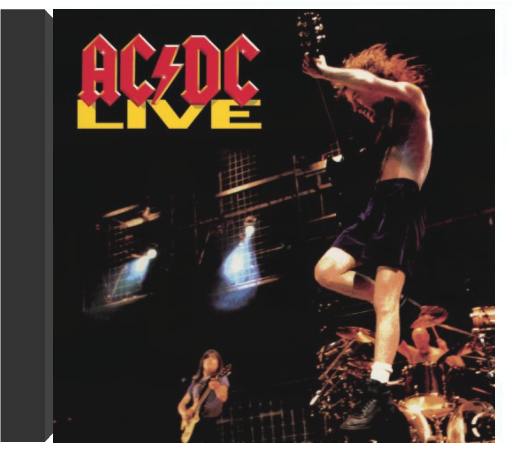
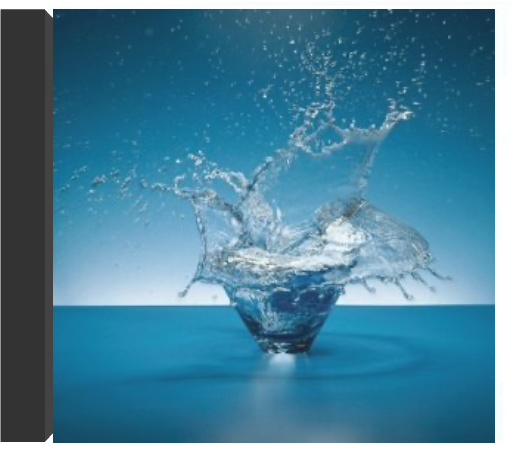
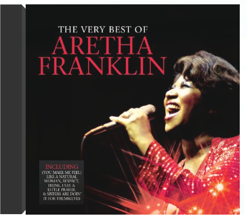
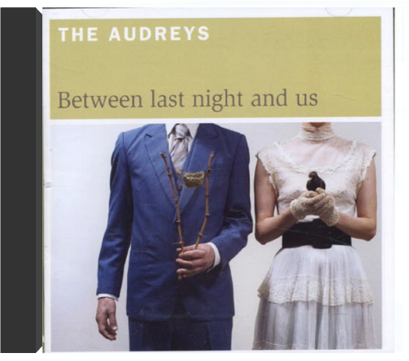
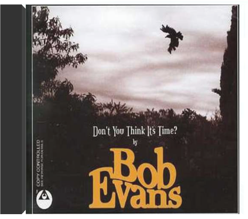

AC/DC LiveAC/DC  Double CD collector's edition of AC/DC's 1992 live album digitally remastered and reissued in a special digipak plus a 16 page full color booklet containing all original album art, many unpublished photos, classic memorabilia and new 2003 liner notes. 23 tracks. Epic. Moment BendsArchitecture in Helsinki 2011 album from the Australian Popsters. Moment Bends sounds like the album they've waited their whole lives to make, retaining the fizzing immediacy of its three predecessors but re-molded with a more sophisticated touch. In large parts, Moment Bends is in dialogue with the dance floor, without being a slave to any particular rhythm. So, imagine a sound equal parts Italia 1982, California 1979 and Melbourne 2011, glued together with a dynamic bounce and a compelling romanticism. Recorded over a two year period in the band's studio space. The band enlisted longtime collaborator Francois Tetaz to guide them through the record making process, in a spiritual healing/ co-production /mixing role. The Very Best of Aretha FranklinAretha Franklin Comphensive collection of Aretha's hits (1st time with both WB & Arista material) from the 60s 70s & 80s on a single disc tracks includes the Top Ten Hits:Like a Natural Woman, I Say a Little Prayer, Respect, Think, Chain of Fools, Rock Steady, I Knew You Were Waiting (for me), Jump To It, Freeway of Love, Who's Zoomin' Who?, I Never Loved a Man, Spanish Harlem, Son of a Preacher Man, Until You Come Back to Me. 18 tracks Between Last Night & UsAudreys Between Last Night and Us was recorded in June 2005 in the intimate setting of producer Shane O'Mara's backyard Melbourne studio. O'Mara (Tim Rogers, Lisa Miller, Stephen Cummings, Rebecca Barnard) and the band captured an intoxicating blend of old-timey and pop-conscious sounds with an army of guitars, banjos, violins, dobros, mandolins and anything else they could find with strings on it. Then it was time for Taasha Coates to add the assured and captivating voice that has wooed festival and club audiences alike. Don't You Think It's TimeBob Evans 3 tracks. Former jebediah frontman kevin mitchell has flown the coup and gone solo, preferring now to use the moniker of bob evans. His new single 'don't you think it's time' is the first taste of his accomplished acoustic album 'suburban songbook' to be released in june. 2006. Viva la VidaColdplay What's this? New Coldplay material so soon after the release of Viva La Vida? In fact, Prospekt's March is a collection of songs that were chiefly intended for the band's fourth album but which didn't get finished before the deadline. There are eight tracks in total, some new, some new-ish and a couple of re-workings of older material. Amongst the re-imaginings is a largely decorative Osaka Sun mix of "Lovers in Japan" and a version of "Lost" that includes an unlikely guest vocalist in the shape Jay-Z—incredibly, it seems to work. Of the new material, the piano interlude "Postcards from Far Away" is the shortest and most coruscating work, while "Life in Technicolor (II)" is larger but slightly less successful, adding only cursory elements to its predecessor on Viva La Vida. More alluring are the gigantic "Glass of Water", the experimental "Rainy Day" and the beautifully melancholy "Prospekt's March/Poppy Fields". A mixed bag then, but one that's generally more enjoyable than not. —Danny McKenna |
 Made with Delicious Library
Made with Delicious LibrarySpringfield, State zipflap congrotus delicious library Doddridge, Edward